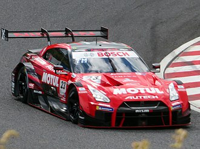

History
Between 1969 and 1974, and again between 1989 and 2002, Nissan produced a high performance version of its Nissan Skyline coupe, called the Nissan Skyline GT-R. This car proved to be iconic for Nissan, achieving much fame and success on the road and in motorsports. The GT-R is an entirely new model sharing little with the Nissan Skyline GT-R, except its signature four round tail lights. Like some later generations of the Skyline GT-R, the GT-R has the ATTESA E-TS all-wheel drive system with a twin-turbocharged 6-cylinder engine. But the HICAS four-wheel-steering system was removed and the former straight-6 RB26DETT engine was replaced with the new VR38DETT engine. Despite the GT-R's heritage, the chassis code for the all-new version is CBA-R35 and for later model years DBA-R35 and 4BA-R35, or R35 for short (where CBA, DBA and 4BA stands for the emissions standard prefix), carrying on the naming trend from previous Skyline GT-R generations.
Development
In 2001, Nissan CEO Carlos Ghosn announced the development of the GT-R when a concept was revealed at the 2001 Tokyo Motor Show. At the 2003 Tokyo Motor Show, he announced that the production version would make its debut in the fall of 2007.[citation needed] For the design perspective, Ghosn wanted four round taillights to be fitted to the new GT-R, just like in its predecessors; he claimed it always been the signature of the GT-R. Overall development began in the year 2000, with Nissan designers from Japan, United States and Europe began to create new sketches for the GT-R. 50 of them made through to Nissan's design director Shiro Nakamura. He claimed the new GT-R's design should reflect not only the modern sports car look, but also the Japanese culture and its predecessor's heritage. Chief designer Hiroshi Hasegawa required more than four years to complete the new GT-R's interior and exterior designs. He claimed it should look sporty, modern and also be aerodynamic to create enough downforce.
At the time, while aerodynamics development was ongoing at Nissan's wind tunnel, Mizuno bought some GT-R test mules to racetracks, such as to the Nürburgring and Sendai Hi-Land Raceway, which aid development of the drivetrain, suspension and brakes. Those test mules were powdered by a brand new 3.8 L twin turbocharged V6 (VR38DETT) engine, developed by Nissan's chief powertrain engineer, Naoki Nakada. Mizuno claimed his goal was to build the GT-R so as to be able to talk with a passenger while driving it at 300 km/h (190 mph). Also, some of the technical parts of the GT-R, such as the Brembo brakes system and Bilstein suspension setup were originally designed by Mizuno himself. Technical development was finalized along with the aerodynamics development, and testing began in several countries with different road and weather conditions. Aerodynamics development of the GT-R began in early 2004 with a group of the company's best engineers − including the developer of the Nissan's successful Le Mans prototypes, Yoshi Suzuka. Development began with an internal design competition between Nissan's design studios in Atsugi, Tokyo, London, and La Jolla. Nissan received more than 80 sketches from the respective design studios and 12 of them were chosen by Nissan with the help of design director, Nakamura. Those 12 sketches were whittled down to 3 models and tested in a wind tunnel by GT-R's exterior designers. Nissan wanted an aerodynamic level for the GT-R, which can aid stability for the car, create enough downforce while maintaining low drag to improve fuel efficiency and acceleration. The target of the team was to make the GT-R to have a drag coefficient of Cd=0.28 or lower, combined with front and rear downforce, which was not done by any other manufacturer at the time. Engineers considered it would be easier to achieve by using active aerodynamics. Later, the idea was rejected, because it would enlarge the price of the car, more than Nissan planned to offer.
RECORD GT-R
In 2013, in a joint project of Nissan Russia and LAV Productions, a 2012 model year GT-R set the ice speed record for a production car at Lake Baikal, southern Siberia, Russia. The record was set by Russian racing driver Roman Rusinov, with a trap speed of 294.8 km/h (183 mph). This lake is considered as the deepest lake of the world. According to Nissan, the record car was in standard specifications with standard Bridgestone tyres.
Nissan GT-R (R35)
Manufacturer Nissan
Model years 2009–present
Assembly Japan Kaminokawa, Tochigi (Nissan Motor Tochigi Plant)
Engine: Naoki Nakada
Exterior: Hirohisa Ono
Interior: Akira Nishimura
Chief Designer: Hiroshi Hasegawa
Design Director: Shiro Nakamura
Class Sports car/Grand tourer (S)
Body style 2-door 2+2 seater coupé
Layout mid-engine, all-wheel drive
Engine 3.8 L twin-turbocharged VR38DETT V6
Power output 353 kW (473 hp; 480 PS) (2007–2009) 357 kW (478 hp; 485 PS) (2009–2010) 390 kW (523 hp; 530 PS) (2010–2012) 405 kW (542 hp; 550 PS) (2012–2016) 416 kW (557 hp; 565 PS) (2016–present) 441 kW (592 hp; 600 PS) (Nismo & Track Edition) 530 kW (710 hp; 720 PS) (GT-R50)
Transmission BorgWarner GR6Z30A dual-clutch transmission